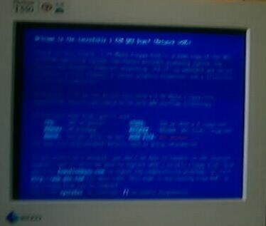
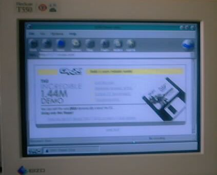
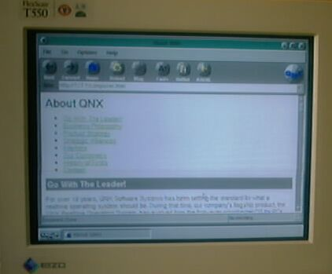
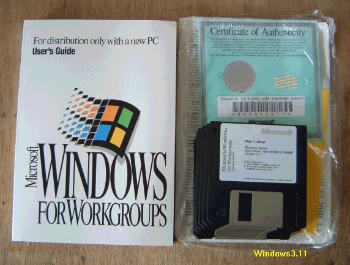

いろいろなOSの実験
この実験に使うマシンは、soket7、K6-3のATXで、IDE-HD用のリムーバブルケースを取り付け、HDを差し替えることにより、様様なOSの実験をできるようになっています。もうひとつは、まったく同じHDを2個用意し、HDごとバックアップが取れる、というようなことも考えています。気をつけなければならないのは、グラフィックなどの拡張ボード類で、あまり新しいものでは、ドライバーを探すのに苦労します。また、OSによっては、まだドライバーが作られていなかったりします。今までに動かしたOSは、Windows3.1、95、98、2000、BeOS、それに何種類かのLinuxなどです。いつでも安定したシステムに戻れるという、、安心がありますので、OSが壊れるような実験も思い切ってできます。もうひとつ気をつけなければいけないのは、メールです。メインのシステム以外では、決してメールを受けないようにしておかないと、受信したメールが、どのHDにはいっているのかわからなくなり、いざというときに大慌てします。少なくとも、メインにしているシステム以外では、受信したメールのコピーを、サーバに置くよう設定する必要があります。
Turbo Linux 7 Workstationのインストールと設定
1.マシンの構成
-マザーボード;AOpenAX59PRO
-CPU;K6-3,400MHz→450MHzクロックアップ
-RAM；128MB
-HD；3GB
-CDROM；ATAPI8倍速
-ビデオボード；Banshee-AGP
-サウンドボード；SB16-ISA
-EtherNetボード；NE2000互換
2.インストールと設定
-;インストールするHDは、リムーバブルケースに入れてあるので、当然Linux専用となる。
-;CDROMブートでインストール、日本語、jp106キーボード、標準インストールとする。
-;自動パーティションでインストールタイプ標準デスクトップを選択。
-;Xの設定は、MITUBISI２１インチモニタと、Bansheeに合わせる。
-;サウンドは、自動検出されないので、リストからSoubdBlaster16を選択し、詳細設定でIRQなどを確認し、よければドライバを読み込ませる。
-;後は自動に任せる。
-;ネットワークは、DHCPを使い、ADSL1.5Mbit/sでインターネットへ接続する。
3.使用感
非常に使いやすく、アプリケーションソフトも豊富で、使い慣れればWindowsを起動しようとは思わなくなるかもしれない。(2002/04/17記)
Be OSのその後
BeOSは、最初にMac版が出て、その後AT互換機版が出、製品版4.5が出た後で、4.6が無料ダウン ロードできるようになりました。そのうち雲行きが怪しくなり、BeInc.自体が無くなってしまったの
です。過去にそんなOSがあったという、記憶が残るだけで、寂しく思っていました。先日MAC POWER誌 の2002年２月号に、OpenBeOSという記事を見付けました。BeOSを忘れられない人たちが、OpenBeOSというプロジェクトを始めたと言うことです。OSをスクラッチから作ろうという、壮大なプロジェクトで、その内容は、http://open-beos.sourceforge.net/で見ることができる。プロジェクトの進捗状況が、棒グラフで示されており、アクセスして見ると、雑誌記事よりも少し進んでいるようです。BeOSが、スリムでスマートなOSであっただけに、それが生き返って、フリーで配布されるようになれば、楽しいですね。(2002/04/17記)
Be OSの参考書
1.日本語版BeOS（R4J）への招待、安田幸弘著、毎日コミュニケーションズ、1999
2.BeOS（R3.2J）への招待、ForIntel&PowerPC、安田幸弘著、毎日コミュニケーションズ、1998
3.BeOSプログラミング入門、河村政雄、武舎広幸著、プレンティスホール、1998
4.BeOS：UNIXアプリケーションの組込み、Martin C Brown著、Ohmsha、1999
QNX DEMO について
QNX（キューニックスと読む）の1.44MB FD１枚に収まるデモをダウンロードし、試してみました。 QNXは一般のパソコン用OSではなく、組込用のリアルタイムOSです。Linuxなどモノリシックな構造では
なく、マイクローカーネルアーキテクチャになっています。X86、PowerPC、SH、ARMなどをサポートして いますが、このデモはX86-Windowsマシン用です。システム条件は、
・CPU； 386以上
・メモリ； 最小8MB
・マウス； シリアル、PS/2またはバス
・ビデオ； VGAまたはVESA2.0適合
・ハードディスク；不要
ソフトはQNX社 http://www.qnx.co.jp から無料でダウンロードできます。MODEM版とNETWORK版 があって、日本語対応はMODEM版のみです。デモFDを作って早速起動してみましょう。
最初の画面

ブラウザの画面

ドキュメントもいろいろ入っています。

作ったFDはNETWORK英語版で、起動してみたのは、IBMノート360Cs（486SX）、自作DURON700MHz機、 自作K6-2-550MHz機、自作K6-3-450MHzで、ネットワークアダプタの検出には失敗していますが、
正常に起動、動作しています。１枚のFDでここまでできるのかと驚きを感じています。 （2002/7/7記）
Windows3.11

日本では販売されませんでしたが、Windows3.1のネットワーク機能を強化した、Windows3.11というOS があります。正式名称はMicrosoft Windows For Workgroups Operating System Version 3.11
です。当然のことながら、日本語版はありません。写真は、パッケージから、FDとマニュアルを取り出 したところです。 偶然、見つけたので購入しました。１０年前にメジャーだったネットワークカードなら、
自動的に検出してくれそうです。 （2002/10/23記）
マザーボードの交換
P3C-Eを移植しました。主なスペックは
1.CPU;PemtiumIII-450MHz
2.RAM;RIMM-64MBx2
3.HDD;Removable;
4.CDROM
5.Net;TenBaseT-Dec21040compatible
6.SCSI;LHA600
7.Audio;SB16(ISA)
8.MO;Fujitsu230MB
9.FDD;3.5inch.
マザーボードを変えると、多くの場合、OSは再インストールが必要になります。リムーバブルケース に入った、何個ものHDに対して、OSを再インストールしなければなりませんので、またしばらく遊べ
そうです。 (2002/11/09記)
SECC2のPIII-733MHzが格安で入手できましたので、CPUを交換。これで、Linuxなどもより軽快に動作するようになりました。（2003/09/10 記）
この他の実験内容などについては、今後少しずつ紹介してゆく予定です。
back to top
古いAT互換機関係のページに戻る
HomePageに戻る